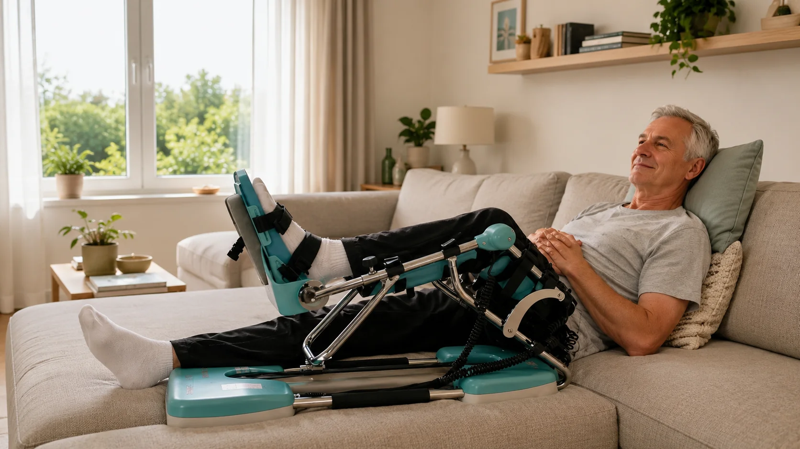

Een kraakbeenoperatie aan de knie — zoals een microfractuur, een mozaïekplastiek of een kraakbeentransplantatie — is een bijzonder type ingreep. In tegenstelling tot bijvoorbeeld een meniscusoperatie of kruisbandoperatie draait het herstel hier niet om kracht of stabiliteit, maar om iets veel trager en kwetsbaarder: het laten aangroeien van nieuw kraakbeen. En net daarbij speelt de Kinetec CPM machine een sleutelrol. In dit artikel legt PhysioVisit uit waarom continue passieve beweging zo belangrijk is na kraakbeenherstel, hoe het revalidatieschema eruitziet, en hoe u de Kinetec thuis correct gebruikt.
Wat is een microfractuur?
Bij een microfractuur maakt de chirurg met een fijne priem kleine gaatjes in het bot onder een beschadigde kraakbeenplek. Daardoor komt beenmerg met stamcellen vrij, dat een soort vervangend kraakbeen (fibrocartilage) vormt. Dit nieuwe weefsel is in het begin uiterst kwetsbaar en heeft beweging zonder belasting nodig om goed uit te rijpen — precies wat de Kinetec biedt.
Waarom Kraakbeen Beweging Nodig Heeft om te Helen
Kraakbeen is een merkwaardig weefsel: het bevat geen bloedvaten. Waar een spier of bot voeding en zuurstof krijgt via de bloedsomloop, moet kraakbeen het hebben van de gewrichtsvloeistof (synoviaal vocht). Die vloeistof wordt als een spons in en uit het kraakbeen geperst telkens wanneer het gewricht beweegt.
Daaruit volgt een belangrijk principe: geen beweging betekent geen voeding. Na een kraakbeenoperatie zit u in een lastige situatie — u mag het kwetsbare nieuwe kraakbeen nog niet belasten met uw lichaamsgewicht, maar het heeft wél beweging nodig om te overleven en uit te rijpen. De oplossing is continue passieve beweging (Continuous Passive Motion of CPM): het gewricht wordt bewogen zonder dat de spieren of het gewicht het kraakbeen platdrukken.
Talrijke onderzoeken — sinds het baanbrekende werk van Dr. Robert Salter in de jaren '80 — tonen aan dat CPM na kraakbeenherstel zorgt voor kwalitatief beter en gladder herstelkraakbeen dan immobilisatie. Daarom schrijven veel orthopeden de Kinetec CPM machine juist bij deze ingreep extra intensief voor.
Hoe Verschilt dit van Andere Knieoperaties?
Na een knieprothese of meniscusoperatie ligt de nadruk op het snel terugwinnen van buiging en kracht. Bij kraakbeenherstel is de aanpak geduldiger en voorzichtiger:
| Aspect | Kraakbeenoperatie / microfractuur | Klassieke knieprothese |
|---|---|---|
| Belasting (steunen) | Vaak 6–8 weken onbelast/krukken | Meestal snel belast toegelaten |
| Kinetec-gebruik | Intensief: 4–6 u/dag, 4–6 weken | 2–3 u/dag, enkele weken |
| Doel CPM | Kraakbeen voeden en laten uitrijpen | Buiging winnen, verklevingen vermijden |
| Tempo opbouw | Traag en geleidelijk | Sneller |
| Volledig herstel | 6–12 maanden (kraakbeen rijpt traag) | 3–6 maanden |
Het belangrijkste verschil om te onthouden: bij kraakbeenherstel beweegt u veel, maar steunt u weinig. De Kinetec maakt die combinatie net mogelijk.

Revalidatieschema Week per Week
Onderstaand schema is een algemene leidraad. Uw chirurg kan, afhankelijk van de grootte en locatie van het kraakbeendefect, afwijkende instructies geven. Volg altijd het protocol van uw eigen behandelteam.
Onbelast, krukken
Nog onbelast
belasten opbouwen
Sport veel later
Week 1–2: Bescherming en beweging
U gebruikt de Kinetec meerdere uren per dag, doorgaans in een laag bereik (0 tot 60 graden) met een rustig tempo. Stappen gebeurt onbelast met krukken. Het doel is het kraakbeen voeden en zwelling beperken — niet presteren. Lees ook ons artikel over kniezwelling verminderen na een operatie.
Week 3–4: Bereik uitbreiden
De buiging op de Kinetec wordt geleidelijk opgevoerd richting 90 graden. Uw kinesitherapeut aan huis voegt lichte actieve oefeningen toe (spierspanning, bewegen zonder weerstand). Steunen blijft meestal nog beperkt.
Week 5–8: Belasting opbouwen
Onder begeleiding bouwt u het steunen op uw been geleidelijk op — vaak met een procentueel schema (bijv. 25%, 50%, 75% van uw gewicht). De Kinetec mag verder richting 120 graden. Het herstellende kraakbeen verdraagt nu stilaan meer.
Week 9 en verder: Kracht en functie
Vanaf nu ligt de focus op spierkracht, stabiliteit en normaal stappen. Volledige terugkeer naar sport (zeker impactsport zoals lopen of voetbal) gebeurt pas véél later — vaak na 6 tot 12 maanden, want kraakbeen rijpt traag uit.
Geduld is hier medisch noodzakelijk
De grootste valkuil na een kraakbeenoperatie is te snel te veel willen. Het nieuwe kraakbeen ziet er op enkele weken misschien hersteld uit, maar heeft maanden nodig om stevig te worden. Te vroeg belasten of sporten kan het herstelweefsel beschadigen. Laat uw kinesitherapeut de progressie bepalen, niet uw gevoel.
De Kinetec Correct Instellen
Voor een kraakbeenrevalidatie gelden enkele aandachtspunten bij het instellen van de Kinetec:
- Bereik: start laag (0–60°) en verhoog volgens het schema van uw chirurg, niet sneller.
- Snelheid: rustig — het gaat om voeding van het kraakbeen, niet om snel buigen.
- Duur: langere sessies (vaak meerdere uren), verspreid over de dag. Dit is intensiever dan bij andere knieoperaties.
- Comfort: het been ligt volledig ontspannen op de platformen. Pijn betekent dat er iets aangepast moet worden — forceer nooit.
Meer detail over instellingen en graden vindt u in ons kinetec gebruiksschema per dag. Twijfelt u of u op de juiste manier werkt? Onze kinesitherapeuten stellen het toestel bij u thuis correct in en controleren uw techniek.
Kinetec Huren en Terugbetaling
Bij PhysioVisit huurt u een Kinetec aan €17 per dag, inclusief levering en installatie in heel België. Omdat een kraakbeenrevalidatie vaak een langere huurperiode vraagt (4 tot 6 weken of meer), is het de moeite waard om de ideale huurduur vooraf te bespreken.
Wat de terugbetaling betreft: PhysioVisit bezorgt u een factuur, die u kunt indienen bij uw verzekering. Afhankelijk van uw polis wordt de huur soms volledig, soms gedeeltelijk of beperkt terugbetaald. Vraag dit altijd na bij uw eigen verzekeraar vóór u start. Meer hierover leest u in ons artikel over kinetec terugbetaling in België.
Kinesitherapie aan Huis bij Kraakbeenherstel
Omdat u in de eerste weken vaak onbelast met krukken stapt, is verplaatsen naar een praktijk lastig en risicovol. Kinesitherapie aan huis is dan ideaal: de therapeut komt bij u langs, controleert de Kinetec, begeleidt uw oefeningen en bewaakt dat u niet te snel gaat. PhysioVisit biedt deze begeleiding aan in de regio Grimbergen (Grimbergen, Strombeek-Bever, Humbeek, Beigem en Koningslo). De Kinetec zelf leveren wij overal in België.
Veelgestelde Vragen over Kinetec na Kraakbeenoperatie
Kinetec Huren na uw Kraakbeenoperatie?
Wij leveren en installeren uw Kinetec aan huis in heel België. Onze kinesitherapeuten stellen het toestel correct in voor uw kraakbeenrevalidatie. Vanaf €17/dag.
Conclusie
Een kraakbeenoperatie zoals een microfractuur vraagt om een unieke aanpak: veel bewegen, weinig belasten en vooral geduld. Omdat kraakbeen via beweging gevoed wordt, is de Kinetec CPM machine hier geen luxe maar een wezenlijk onderdeel van het herstel. Door de knie dagelijks meerdere uren passief te bewegen, geeft u het nieuwe kraakbeen de beste kans om kwalitatief uit te rijpen.
Combineer de Kinetec met deskundige begeleiding. Een kinesitherapeut aan huis bewaakt uw belasting, stelt het toestel correct in en zorgt dat u niet te snel gaat. Bij PhysioVisit regelen wij zowel de Kinetec-huur als de kinesitherapeutische begeleiding. Neem contact op voor advies op maat.